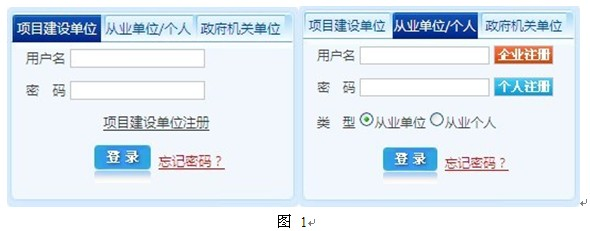
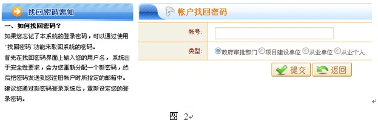
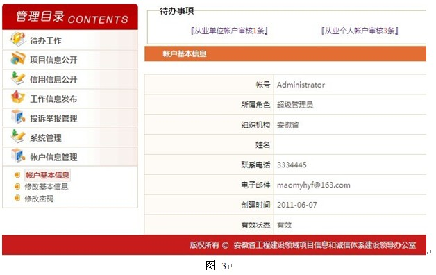
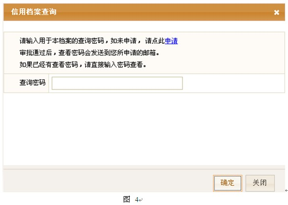

※ 用户注册、登录功能介绍
1. 用户注册
进入系统首页，在页面左下角登录框内将用户角色切换为“项目建设单位”或“从业单位/个人”，如图1所示：

在图1中，点击“企业注册”，页面跳转到企业注册界面，参照页面左侧企业注册帐号说明信息在注册框内输入注册信息，点击“提交”按钮，将信息提交给系统管理员有待审核。
在图1中，点击“个人注册”，页面跳转到个人注册界面，参照页面左侧个人注册帐号说明信息在注册框内输入注册信息，点击“提交”按钮，将信息提交给系统管理员有待审核。
在图1中，点击“项目建设单位注册”，页面跳转到项目建设单位注册界面，参照也没左侧项目单位注册账号说明信息在注册框内输入注册信息，点击“提交”按钮，将信息提交给系统管理员有待审核。
2. 用户登录
“项目建设单位”或“从业单位/个人”注册提交帐号信息，系统管理员审核以后，“项目建设单位”或“从业单位/个人”注册时使用的邮箱会收到一封邮件，邮件提示注册信息审核通过以后方可成功登录此系统。
在图1中，输入正确的用户名、密码，选择相应的用户类型，点击“登录”按钮或按下Enter键，成功登录“项目建设单位”或“从业单位或从业个人”系统后台，可以进行相关的用户信息管理操作。
3. 密码找回
用户忘记密码可以点击图1中“登录”按钮右侧的“忘记密码？”，页面跳转到密码找回界面，如图2所示，参照页面左侧如何找回密码内容介绍方可找回用户密码。

返回页首
※ 用户信息管理说明
【从业单位或从业个人成功登录系统后台，对用户信息进行管理。】
1. 帐户基本信息查看
在下图图3中，点击导航“帐户基本信息”，显示当前帐户的基本信息。

3. 密码修改
点击导航“修改密码”，显示修改密码界面，输入原始密码和新密码，点击“保存”，提示修改成功则密码修改成功。
4. 从业个人的信息管理与从业单位操作类似。
返回页首
※诚信档案申请查看
【普通用户对从业单位或从业个人的诚信档案进行查看，需要提交申请，得到查询密码以后方可查询到从业单位或从业个人诚信档案的详细信息。】
1. 诚信档案查询申请
首页，从业单位诚信档案标签，点击列表内单位名称，弹出信用档案查询窗口，如下图图4所示，初次查看需要申请查询密码。单击“申请”，弹出诚信档案查询申请窗口，输入相关申请信息，点击“确定”按钮提交以待审批。诚信档案查询申请审批通过之后，系统会将查询密码发送到用户申请时留下的邮箱内。

2. 诚信档案查看
首页，从业单位诚信档案标签，点击已提交申请查询的单位名称，弹出图4所示的诚信档案诚信窗口，输入查询密码，点击“确定”按钮，显示此单位的诚信档案信息。
3. 从业个人的诚信档案查询操作类似于从业单位的诚信档案查询。
返回页首
※ 投诉举报功能介绍
【在此平台上，实现用户对相关部门、机关或个人某些违法或不良行为的举报。】
1. 投诉举报提交
系统首页导航，点击“投诉举报”或点击“在线举报”(图5所示)，页面跳转到投诉举报界面，点击“我要投诉举报”，显示投诉举报信息输入框，参照投诉举报使用需知输入举报信息，点击“提交”按钮将举报信息提交给管理员，以待审核。
2. 投诉举报查看
系统管理员对投诉举报的信息，查看处理之后，首页投诉举报栏显示投诉举报的相关信息，包括举报主题、内容、回复信息等。
返回页首
※ 其他信息查看说明
1. 点击各版块下的详细信息查看链接，显示详细信息。
2. 各省、市、县部门专栏链接查看
点击各省直、市直、县直部门的名称，链接到对应省直、市直、县直部门专栏。
返回页首